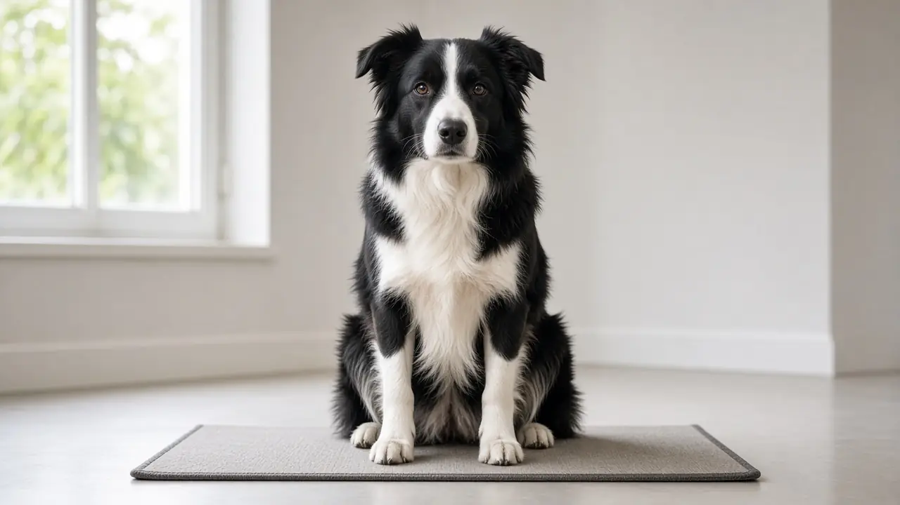

Why does my dog stare at me?
A dog staring at you is usually paying attention: waiting for a cue, asking for something, or staying socially close. A relaxed gaze during calm time together fits bonding. A stiff, unblinking stare over food or a toy is a warning to give space. Staring blankly at a wall, or a dazed stare with shaking or lip licking, is a reason to call your vet.

Most stares mean your dog is waiting or asking
The American Kennel Club says there is no single reason a dog stares. Most of the time the dog is communicating, or waiting for a person to communicate. Dogs watch people for what happens next. They learn that a leash comes out before a walk, that the kitchen gets busy before meals, and that certain movements mean play or a car ride. A dog that locks eyes with you then is often reading the room.
Dogs trained with rewards watch closely for cues such as sit or down, because those cues can earn a treat, a toy, or a game. Dogs also read people by following a pointed hand.
Staring is also a request. The AKC gives ordinary examples: a dog that needs to go out may sit by the door and look at you, and a dog that wants your food may stare while you eat. If the stare is rewarded, it gets stronger. At first the dog may only be curious. If a person feels guilty and hands over food, the dog learns that staring works. The AKC suggests ignoring that stare and rewarding a behavior you want instead, such as chewing a bone on a bed during meals, or ringing a bell to ask to go outside.
A soft gaze can be part of bonding
Not every long look is a request. The AKC describes a lot of staring as affectionate eye contact, and it links a mutual gaze with oxytocin, a hormone involved in social bonding.
National Geographic's account of a 2015 Science study by Miho Nagasawa and colleagues at Azabu University goes further than that general claim. In the account, 30 owners spent half an hour with their dogs, with urine collected from both before and after. Owners whose dogs looked at them the longest had the largest rises in oxytocin. Those owners then spent more time looking back, touching, and talking, and the dogs that received the most of that attention also showed the largest oxytocin rises.
The same account says wolves did not show this pattern. Eleven hand-reared wolves with daily human contact did not make regular eye contact, and their gaze was not tied to a rise in oxytocin. Among wolves, a direct look is often a threat. In a follow-up with 27 dogs, only the females spent more time gazing at their owners after receiving oxytocin, and those owners then showed a rise as well.
This does not mean every stare is affection. The eyebrow lift people call puppy dog eyes is a separate topic.
A hard stare is a warning
The AKC separates a soft look from a hard stare: unblinking eyes and a stiff posture. It advises people not to stare down an unfamiliar dog, and not to hold a dog still to look into its eyes. If you get that hard stare, back away and break eye contact. It often appears around a bone or another valued item. The AKC says resource guarding commonly includes a hard stare plus other tense body language, and that this is a reason to consult a trainer or behaviorist.
The ASPCA describes guarding as a range, from running off with an item or growling when someone approaches, to biting or chasing a person away. Some dogs guard chews or toys, some guard stolen items such as socks, and many guard food. Its food guarding page lists staring among signs to take seriously, with standing stiffly over the bowl, gulping, freezing, growling, snapping, snarling, biting, or chasing people off. If those signs appear, the ASPCA says to stop and contact a certified applied animal behaviorist, a board-certified veterinary behaviorist, or a qualified certified professional dog trainer.
A home with children and a guarding dog is especially risky, the ASPCA says, because children are less likely to notice warnings. A freeze or a hard stare is information. Give space, and get qualified help before the warning becomes a bite.
When staring needs a veterinarian
Some staring is not aimed at you. VCA Animal Hospitals says that during a seizure a dog may show only mild changes: a dazed look, mild shaking, staring aimlessly, and licking the lips. Other seizures affect the whole body and consciousness. A generalized seizure usually lasts one to two minutes, VCA says. If it does not stop within five minutes, VCA calls that status epilepticus and says the dog needs urgent veterinary treatment. Afterward a dog may seem confused, pace, drool, or seem briefly blind. A short video, taken from a safe distance, helps the vet. Do not put your hands in the dog's mouth.
A blank stare at a wall is different from watching a person. VCA describes cognitive dysfunction, an age-related brain disease, using the sign list DISHAAL. Disorientation on that list includes getting stuck in corners, trouble moving around familiar objects, and staring blankly at walls or into space, along with not recognizing people. Other signs include sleep changes, house soiling, activity changes, new anxiety, and trouble with known cues. An older dog that newly stares into space should see a vet, so pain, illness, and seizures can be told apart from cognitive change. See health basics and a 2026 study of senior dog brains.
What to do about everyday staring
You do not need to stop a relaxed dog from looking at you. The AKC notes that a dog who is watching you is easier to train, and it suggests teaching a cue such as "watch me" for moments when you want that focus. If the stare is a bid for food from your plate, do not pay it. Reward a calm alternative instead, using reward based training.
Judge the whole dog. Relaxed muscles and easy breathing fit the calm picture the ASPCA describes. A stiff body over a bowl does not. A dog that stares at nothing, or seems lost in a familiar room, needs a vet, not a new cue.
Frequently asked questions
Why does my dog stare at me while I eat?
The stare has often been rewarded with food. Reward a different behavior and do not hand over food for the look.
Is it rude to look my dog in the eyes?
A relaxed look with a dog you know is usually fine. Do not stare down a stiff or unfamiliar dog.
Why does my dog stare at the wall?
VCA lists blank staring as a possible sign of cognitive dysfunction or, with a dazed look, of a seizure. Ask a vet if it is new.
Does a long stare mean my dog loves me?
It can be affectionate. One study linked longer mutual gaze with oxytocin changes, but a stare can also be a request.
When should I call a vet about staring?
Call if the stare is aimless, comes with shaking or lip licking, or an older dog newly stares at walls.
Sources
- Why does my dog stare at me?, American Kennel Club
- Yong E (16 April 2015). Through this chemical loop, dogs win our hearts. Account of Nagasawa et al., Science 2015. DOI 10.1126/science.1261022, National Geographic
- Food guarding, ASPCA
- Seizures in dogs, VCA Animal Hospitals
- Treating CDS in cats and dogs, VCA Animal Hospitals
General education only, not veterinary advice. If you are worried about your dog, contact your vet; in an emergency, contact an emergency vet straight away.